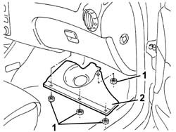
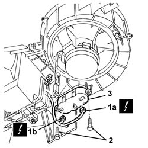

5040C44 FAN MOTOR ELECTRONIC VARIATOR - R+R
- Path
- Procedures > 50 AUXILIARY UNITS > 5040 AIR CONDITIONING CASING AND COMPONENTS > 5040C AIR CONDITIONER BOX AND COMPONENTS > 5040C44 FAN MOTOR ELECTRONIC VARIATOR - R+R
- Kind
- repair procedure (removal / refitting; the operation number is the code)
- Applies to
- engines: 2.0 JTS, 3.2 V6, 1.9 JTD 16V; all production periods
- Interactive page
- https://sloeber94.github.io/elrnDB-aGt/en/#/125001542
Applies to: engines: 2.0 JTS, 3.2 V6, 1.9 JTD 16V; all production periods
 Removing
Removing
 Refitting
Refitting1. Working under the right side of the dashboard, undo the nuts fixing the bulkhead.
2. Remove the bulkhead.

Applies to: engines: 2.0 JTS, 3.2 V6, 1.9 JTD 16V; all production periods
1. Disconnect the electrical connections (1a and 1b) for the electronic governor.
Name | Connector | |
|---|---|---|
1a | Fan speed variator | See M72A FAN SPEED VARIATOR ( CONNECTORS ) |
Name | Connector | |
|---|---|---|
1b | Fan speed variator | See M72B FAN SPEED VARIATOR ( CONNECTORS ) |
2. Undo the bolts.
3. Remove the electronic variator

Applies to: engines: 2.0 JTS, 3.2 V6, 1.9 JTD 16V; all production periods
Refitting
RemovingCheck that the electronic governor is not damaged and, if necessary, conduct an electrical test on it (see 'Descriptions and Operation').
Reposition the electronic variable valve timing.
Tighten the bolts.
Connect the electrical connections .
Position the bulkhead and fix it using the nuts.
Test the operation of the fan.